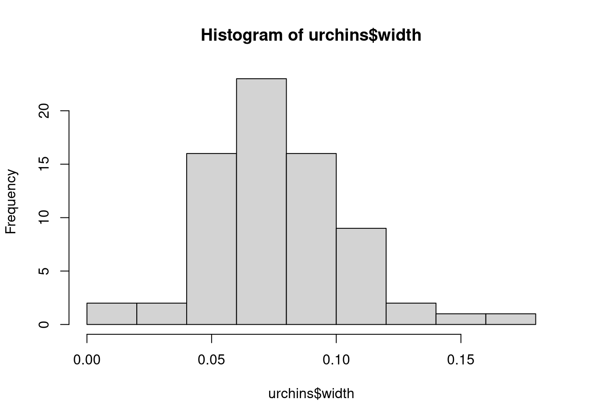
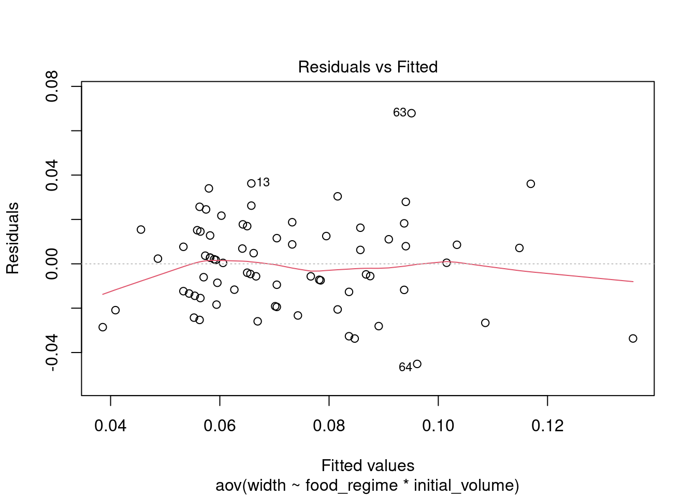
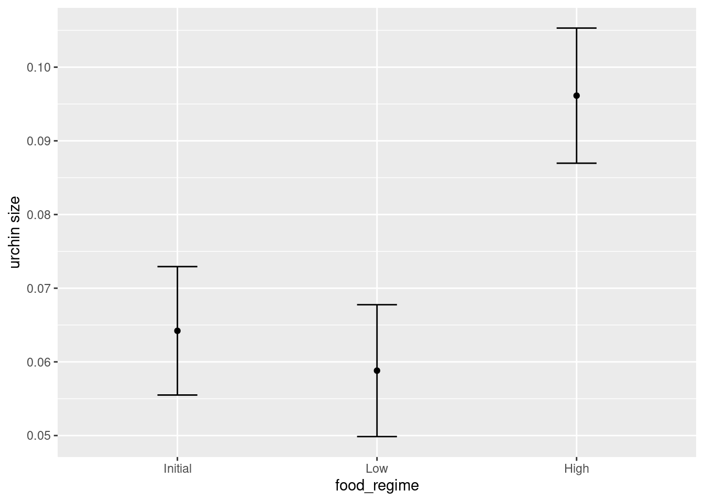

# install.packages("readr")
library(readr) # data import
# install.packages("dplyr")
library(dplyr) # data manipulation
# install.packages("ggplot2")
library(ggplot2) # data visualisation
# install.packages("car")
library(car) # Companion to the book "An R Companion to Applied Regression"
# install.packages("performance")
library(performance) # Assessment of regression models performanceR statistics: ANOVA and linear regression
What are we going to learn?
In this hands-on session, you will use R, RStudio to run analysis of variance (ANOVA) and linear regression models.
Specifically, you will learn about:
- data visualisation in base R and ggplot2
- analysis of variance (ANOVA) in base R
- linear models in base R
- the tidy model approach
Keep in mind
- Everything we write today will be saved in your project. Please remember to save it in your H drive or USB if you are using a Library computer.
- R is case sensitive: it will tell the difference between uppercase and lowercase.
- Respect the naming rules for objects (no spaces, does not start with a number…)
Help
For any dataset or function doubts that you might have, don’t forget the three ways of getting help in RStudio:
- the shortcut command:
?functionname - the help function:
help(functionname) - the keyboard shortcut: press F1 with your cursor on a function name
Open RStudio
- If you are using your own laptop please open RStudio
- If you need them, we have installation instructions
- Make sure you have a working internet connection
- On Library computers (the first time takes about 10 min.):
- Log in with your UQ credentials (student account if you have two)
- Make sure you have a working internet connection
- Go to search at bottom left corner (magnifying glass)
- Open the ZENworks application
- Look for RStudio
- Double click on RStudio which will install both R and RStudio
Setting up
Install and load required packages for first sections
Remember to use Ctrl+Enter to execute a command from the script.
New project
- Click the “File” menu button (top left corner), then “New Project”
- Click “New Directory”
- Click “New Project” (“Empty project” if you have an older version of RStudio)
- In “Directory name”, type the name of your project, e.g. “r_statistics”
- Select the folder where to locate your project: for example, a
Documents/RProjectsfolder, which you can create if it doesn’t exist yet. - Click the “Create Project” button
Create a script
We will use a script to write code more comfortably.
- Menu: Top left corner, click the green “plus” symbol, or press the shortcut (for Windows/Linux) Ctrl+Shift+N or (for Mac) Cmd+Shift+N. This will open an “Untitled1” file.
- Go to “File > Save” or press (for Windows/Linux) Ctrl+S or (for Mac) Cmd+S. This will ask where you want to save your file and the name of the new file.
- Call your file “process.R”
Introducing our data
The following section will be using data from Constable (1993) to explore how three different feeding regimes affect the size of sea urchins over time.
Sea urchins reportedly regulate their size according to the level of food available to regulate maintenance requirements. The paper examines whether a reduction in suture width (i.e., connection points between plates; see Fig. 1 from constable 1993) is the basis for shrinking due to low food conditions.
The data in csv format is available from the tidymodels website.
urchins <-
# read in the data
read_csv("https://tidymodels.org/start/models/urchins.csv") %>%
# change the names to be more descriptive
setNames(c("food_regime", "initial_volume", "width")) %>%
# convert food_regime from character to factor, helpful for modeling
mutate(food_regime = factor(food_regime,
levels = c("Initial", "Low", "High")))urchins # see the data as a tibbleWe have 72 urchins with data on:
- experimental feeding regime group with 3 levels (Initial, Low, or High)
- size in milliliters at the start of the experiment (initial_volume)
- suture width in millimeters at the end of the experiment (width, see Fig. 1)
Statistics in R using base and stats
Visualise the data
Use a boxplot to visualize width versus food_regime as a factor and a scatterplot for width versus initial_volume as a continuous variable.
boxplot(width ~ food_regime, data = urchins)plot(width ~ initial_volume, data = urchins)We can see that there are some relationships between the response variable (width) and our two covariates (food_regime and initial volume). But what about the interaction between the two covariates?
Challenge 1 - Use ggplot2 to make a plot visualising the interaction between our two variables. Add a trendline to the data.
Hint: think about grouping and coloring.
ggplot(urchins,
aes(x = initial_volume,
y = width,
col = food_regime)) +
geom_point() +
geom_smooth(method = "lm", se = FALSE) # add a linear trend line without a confidence interval`geom_smooth()` using formula = 'y ~ x'Urchins that were larger in volume at the start of the experiment tended to have wider sutures at the end. Slopes of the lines look different so this effect may depend on the feeding regime indicating we should include an interaction term.
Analysis of Variance (ANOVA)
Information in this section was taken from rpubs.com and Data Analysis in R Ch 7.
We can do an ANOVA with the aov() function to test for differences in sea urchin suture width between our groups. We are technically running and analysis of covariance (ANCOVA) as we have both a continuous and a categorical variable. ANOVAs are for categorical variables and we will see that some of the post-hoc tests are not amenable to continuous variables.
aov()uses the model formularesponse variable ~ covariate1 + covariate2. The * denotes the inclusion of both main effects and interactions which we have done below. The formula below is equivalent toreponse ~ covar1 + covar2 + covar1:covar2i.e., the main effect of covar1 and covar2, and the interaction between the two.
aov_urch <- aov(width ~ food_regime * initial_volume,
data = urchins)
summary(aov_urch) # print the summary statistics Df Sum Sq Mean Sq F value Pr(>F)
food_regime 2 0.012380 0.006190 13.832 9.62e-06 ***
initial_volume 1 0.008396 0.008396 18.762 5.15e-05 ***
food_regime:initial_volume 2 0.004609 0.002304 5.149 0.00835 **
Residuals 66 0.029536 0.000448
---
Signif. codes: 0 '***' 0.001 '**' 0.01 '*' 0.05 '.' 0.1 ' ' 1Both the main effects and interaction are significant (p < 0.05) indicating a significant interactive effect between food regime and initial volume on urchin suture width. We need to do a pairwise-comparison to find out which factor levels and combination of the two covariates have the largest effect on width.
Pair-wise comparison
Run a Tukey’s Honestly Significant Difference (HSD) test - note it does not work for non-factors as per the warning message.
TukeyHSD(aov_urch)Warning in replications(paste("~", xx), data = mf): non-factors ignored:
initial_volumeWarning in replications(paste("~", xx), data = mf): non-factors ignored:
food_regime, initial_volumeWarning in TukeyHSD.aov(aov_urch): 'which' specified some non-factors which
will be dropped Tukey multiple comparisons of means
95% family-wise confidence level
Fit: aov(formula = width ~ food_regime * initial_volume, data = urchins)
$food_regime
diff lwr upr p adj
Low-Initial -0.006791667 -0.021433881 0.007850548 0.5100502
High-Initial 0.023791667 0.009149452 0.038433881 0.0006687
High-Low 0.030583333 0.015941119 0.045225548 0.0000129The comparison between High-Initial and High-Low food regimes are significant (p < 0.05).
Checking the model
We also want to check that our model is a good fit and does not violate any ANOVA assumptions:
- Data are independent and normally distributed.
- The residuals from the data are normally distributed (homogeneity of variance).
- The variances of the sampled populations are equal.
Normal distribution
Challenge 2 - Use a histogram and quantile-quantile (QQ) plots to visually check data are normally distributed.
hist(urchins$width)
# run the two together to combine them
qqnorm(urchins$width)
qqline(urchins$width)
QQ plots show the actual data vs their theoretical quantiles (i.e. the quantiles if the data was normally distributed). If the data was normally distributed, the points would follow closely the diagonal.
You could also run a Shapiro-Wilk test on the data:
shapiro.test(urchins$width)
Shapiro-Wilk normality test
data: urchins$width
W = 0.95726, p-value = 0.01552The p-value is less than 0.05 so the data are significantly different from a normal distribution.
Homogeneity of variance
We plot the model’s residuals (difference between observed and predicted values) versus the fitted values to check for homogeneity of variance - we do not want too much deviation from 0. (The red line is the average of the values.)
plot(aov_urch, 1) # only plot first of 4 plots
We can also plot the predicted values from the model with the actual values:
plot(predict(aov_urch) ~ urchins$width)
abline(0, 1, col = "red") # plot a red line with intercept of 0 and slope of 1This QQ plot show the residuals vs their theoretical quantiles (i.e. the quantiles if the data was normally distributed). If the residuals were normally distributed, they would follow closely the diagonal.
plot(aov_urch, 2)To check the normality of residuals, we can also run a Shapiro-Wilk test on residuals:
shapiro.test(resid(aov_urch))
Shapiro-Wilk normality test
data: resid(aov_urch)
W = 0.98456, p-value = 0.5244The residuals fall on the Normal Q-Q plot diagonal and the Shapiro-Wilk result is non-significant (p > 0.05), which means we can’t reject the hypothesis that the data comes from a population with a normal distribution.
Another way to check for homogeneity of variance is by using Levene’s test.
Challenge 3 - use the help documentation for leveneTest() from the car package to check homogeneity of variance on food_regime.
Again, only works for factor groups.
leveneTest(width ~ food_regime, data = urchins)The Levene’s Test is significant for food_regime, which is not what we were hoping for: it means the assumption of homogeneity of variance is not met. There are a few options to deal with this. You can ignore this violation based on your own a priori knowledge of the distribution of the population being samples, drop the p-value significance, or use a different test.
Linear Model
lm_urch <- lm(width ~ food_regime * initial_volume,
data = urchins)
summary(lm_urch)
Call:
lm(formula = width ~ food_regime * initial_volume, data = urchins)
Residuals:
Min 1Q Median 3Q Max
-0.045133 -0.013639 0.001111 0.013226 0.067907
Coefficients:
Estimate Std. Error t value Pr(>|t|)
(Intercept) 0.0331216 0.0096186 3.443 0.001002 **
food_regimeLow 0.0197824 0.0129883 1.523 0.132514
food_regimeHigh 0.0214111 0.0145318 1.473 0.145397
initial_volume 0.0015546 0.0003978 3.908 0.000222 ***
food_regimeLow:initial_volume -0.0012594 0.0005102 -2.469 0.016164 *
food_regimeHigh:initial_volume 0.0005254 0.0007020 0.748 0.456836
---
Signif. codes: 0 '***' 0.001 '**' 0.01 '*' 0.05 '.' 0.1 ' ' 1
Residual standard error: 0.02115 on 66 degrees of freedom
Multiple R-squared: 0.4622, Adjusted R-squared: 0.4215
F-statistic: 11.35 on 5 and 66 DF, p-value: 6.424e-08In the output, we have the model call, residuals, and the coefficients. The first coefficient is the (Intercept) and you might notice the food_regimeInitial is missing. The function defaults to an effects parameterisation where the intercept is the reference or baseline of the categorical group - Initial in this case.
You can change the reference level of a factor using the
relevel()function.
The estimates of the remaining group levels of food_regime represents the effect of being in that group. To calculate the group coefficients for all group levels you add the estimates for the level to the intercept (first group level) estimate. For example, the estimate for the ‘Initial’ feeding regime is 0.0331 and we add the estimate of ‘Low’ (0.0331 + 0.0197) to get the mean maximum size of 0.0528 mm for width.
For the continuous covariate, the estimate represents the change in the response variable for a unit increase in the covariate. For example, initial_volume’s estimate of 0.0015 represents a 0.0015 mm increase (the estimate is positive) in width per ml increase in urchin initial volume.
We can get ANOVA test statistics on our linear model using anova() in base or Anova() from the car package.
anova(lm_urch)Anova(lm_urch)These are effectively the same as the aov() model we ran before.
Note: The statistics outputs are the same comparing the
aov()andanova()models while theAnova()model is not exactly the same. TheAnova()output tells us it was a Type II test and theaov()documentation says it is only for balanced designs which means the Type 1 test is applied (see here). The type of test can be set forAnova()but not the others. Here, the overall take-away from the different ANOVA functions are comparable.
Challenge 4 - use the check_model() documentation to apply the function to our lm_urch model.
The performance package has a handy function check_model() that will check several aspects of your model in one go:
check_model(lm_urch)Challenge 5 - conduct your own ANOVA or linear regression using the mgp dataset from {ggplot2}.
- Test whether # of cylinders and/or engine displacement affect fuel efficiency.
- Make a plot to visualize the relationship.
Hint: Check out the documentation for the dataset
?mpgto see the variables in the dataset. Are the variables the right data type? Suggest saving the dataset locally in your environment i.e.,mpg2 <- mpgso you can change data types if necessary.
mpg2 <- mpg
mpg2$cyl <- as.factor(mpg$cyl) # convert cyl from numeric to factor
# base R ANOVA
aov_cars <- aov(hwy ~ cyl * displ, data = mpg2)
summary(aov_cars) Df Sum Sq Mean Sq F value Pr(>F)
cyl 3 4836 1612.1 142.69 < 2e-16 ***
displ 1 219 218.8 19.37 1.66e-05 ***
cyl:displ 2 642 321.1 28.42 9.65e-12 ***
Residuals 227 2565 11.3
---
Signif. codes: 0 '***' 0.001 '**' 0.01 '*' 0.05 '.' 0.1 ' ' 1TukeyHSD(aov_cars, "cyl")Warning in replications(paste("~", xx), data = mf): non-factors ignored: displWarning in replications(paste("~", xx), data = mf): non-factors ignored: cyl,
displ Tukey multiple comparisons of means
95% family-wise confidence level
Fit: aov(formula = hwy ~ cyl * displ, data = mpg2)
$cyl
diff lwr upr p adj
5-4 -0.05246914 -4.508182 4.403244 0.9999898
6-4 -5.97968433 -7.355259 -4.604110 0.0000000
8-4 -11.17389771 -12.593534 -9.754261 0.0000000
6-5 -5.92721519 -10.385582 -1.468848 0.0038274
8-5 -11.12142857 -15.593586 -6.649271 0.0000000
8-6 -5.19421338 -6.622156 -3.766270 0.0000000# linear model
lm_cars <- lm(hwy ~ cyl * displ, data = mpg2)
summary(lm_cars)
Call:
lm(formula = hwy ~ cyl * displ, data = mpg2)
Residuals:
Min 1Q Median 3Q Max
-6.6698 -2.0533 -0.4563 1.6948 13.1597
Coefficients: (1 not defined because of singularities)
Estimate Std. Error t value Pr(>|t|)
(Intercept) 46.601 2.586 18.018 < 2e-16 ***
cyl5 2.887 1.773 1.628 0.10484
cyl6 -10.221 3.795 -2.693 0.00760 **
cyl8 -35.626 4.390 -8.114 3.07e-14 ***
displ -8.295 1.193 -6.954 3.74e-11 ***
cyl5:displ NA NA NA NA
cyl6:displ 4.318 1.440 2.998 0.00302 **
cyl8:displ 9.591 1.376 6.969 3.43e-11 ***
---
Signif. codes: 0 '***' 0.001 '**' 0.01 '*' 0.05 '.' 0.1 ' ' 1
Residual standard error: 3.361 on 227 degrees of freedom
Multiple R-squared: 0.6896, Adjusted R-squared: 0.6814
F-statistic: 84.05 on 6 and 227 DF, p-value: < 2.2e-16Anova(lm_cars) # from the car packageNote: model has aliased coefficients
sums of squares computed by model comparisonggplot(data = mpg2,
aes(x = displ,
y = hwy,
color = cyl)) +
geom_point() +
geom_smooth(method = "lm") `geom_smooth()` using formula = 'y ~ x'The inbetween…
Before going into Tidymodels, it should be mentioned there are many excellent linear regression packages. To name a few:
- nlme
- lmer
- lmerTest
- glmmTMB
- and more…
The packages vary in the methods, how to specify random factors, etc. The model outputs also tend to be not so friendly to export into a table and document.
Introducing Tidymodels
Like the tidyverse package, the Tidymodels framework is a collection of packages for modeling and machine learning following the tidyverse principles.
Load more packages
# install.packages("tidymodels")
library(tidymodels) # for parsnip package and rest of tidymodels
# install.packages("dotwhisker")
library(dotwhisker)# for visualizing regression resultsBuild and fit a model
Let’s apply a standard two-way analysis of variance (ANOVA) model to the dataset as we did before. For this kind of model, ordinary least squares is a good initial approach.
For Tidymodels, we need to specify the following:
- The functional form using the parsnip package.
- The method for fitting the model by setting the engine.
We will specify the functional form or model type as “linear regression” as there is a numeric outcome with a linear slope and intercept. We can do this with:
linear_reg() Linear Regression Model Specification (regression)
Computational engine: lm On its own, not that interesting. Next, we specify the method for fitting or training the model using the set_engine() function. The engine value is often a mash-up of the software that can be used to fit or train the model as well as the estimation method. For example, to use ordinary least squares, we can set the engine to be lm.
The documentation page for linear_reg() lists the possible engines. We’ll save this model object as lm_mod.
lm_mod <-
linear_reg() %>%
set_engine("lm")Next, the model can be estimated or trained using the fit() function and the model formula we used for the ANOVA:
width ~ initial_volume * food_regime
lm_fit <-
lm_mod %>%
fit(width ~ initial_volume * food_regime, data = urchins)
lm_fitparsnip model object
Call:
stats::lm(formula = width ~ initial_volume * food_regime, data = data)
Coefficients:
(Intercept) initial_volume
0.0331216 0.0015546
food_regimeLow food_regimeHigh
0.0197824 0.0214111
initial_volume:food_regimeLow initial_volume:food_regimeHigh
-0.0012594 0.0005254 We can use the tidy() function for our lm object to output model parameter estimates and their statistical properties. Similar to summary() but the results are more predictable and in a useful format.
tidy(lm_fit)This output can be used to generate a dot-and-whisker plot of our regression results using the dotwhisker package:
tidy(lm_fit) %>%
dwplot(dot_args = list(size = 2, color = "black"),
whisker_args = list(color = "black"),
vline = geom_vline(xintercept = 0,
color = "grey50",
linetype = 2))Warning: Using the `size` aesthetic with geom_segment was deprecated in ggplot2 3.4.0.
ℹ Please use the `linewidth` aesthetic instead.
ℹ The deprecated feature was likely used in the dotwhisker package.
Please report the issue at <https://github.com/fsolt/dotwhisker/issues>.Use a model to predict
Say that it would be interesting to make a plot of the mean body size for urchins that started the experiment with an initial volume of 20 ml.
First, lets make some new example data to predict for our graph:
new_points <- expand.grid(initial_volume = 20,
food_regime = c("Initial", "Low", "High"))
new_pointsWe can then use the predict() function to find the mean values at 20 ml initial volume.
With tidymodels, the types of predicted values are standardized so that we can use the same syntax to get these values.
Let’s generate the mean suture width values:
mean_pred <- predict(lm_fit, new_data = new_points)
mean_predWhen making predictions, the tidymodels convention is to always produce a tibble of results with standardized column names. This makes it easy to combine the original data and the predictions in a usable format:
conf_int_pred <- predict(lm_fit,
new_data = new_points,
type = "conf_int")
conf_int_pred# now combine:
plot_data <-
new_points %>%
bind_cols(mean_pred, conf_int_pred)
plot_data# and plot:
ggplot(plot_data,
aes(x = food_regime)) +
geom_point(aes(y = .pred)) +
geom_errorbar(aes(ymin = .pred_lower,
ymax = .pred_upper),
width = .2) +
labs(y = "urchin size")
There is also an example of a Bayesian model in the tidymodels article I have not included here.
Close project
Closing RStudio will ask you if you want to save your workspace and scripts. Saving your workspace is usually not recommended if you have all the necessary commands in your script.
Useful links
- For statistical analysis in R:
- Steve Midway’s Data Analysis in R Part II Analysis
- Jeffrey A. Walker’s Applied Statistics for Experiemental Biology
- Chester Ismay and Albert Y. Kim’s ModernDive Statistical Inference via Data Science
- For tidymodels:
- Our compilation of general R resources
Licence
Because it draws heavily from the CC BY-SA-licensed Tidymodels article titled “Build a model”, this material is also released under a CC BY-SA 4.0 licence.